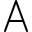

屏幕电子教鞭（ePointer）帮助
每个画图工具或功能的使用说明，都可以在软件的【偏好设置 - 快捷键设置】中，点击各个工具后面的问号按钮来获取，这里只介绍一些重要的或可能会被忽视的软件使用技巧。
帮助链接导航
一些可能会被忽略的使用技巧
工具箱的隐藏和折叠： 电子屏幕教鞭界面只有一个工具箱，当将工具箱拖动到左、上、右的屏幕边缘时，工具箱会自动隐藏进屏幕边缘，鼠标划过工具箱所在的边缘，可重新显示工具箱。
右下角带黑色三角◢的工具按钮： 表示该按钮带有下拉菜单，一般有3种方式打开工具的下拉菜单：
一是点击黑色三角◢部分弹出菜单
二是长按该按钮可弹出菜单（macOS版对效果按钮无效）
三是右键单击该按钮弹出菜单（windows版对效果按钮无效）
效果按钮的排它式启用： 图形效果按钮，包括阴影[^win][^macOS]、描边[^win][^macOS]、虚线[^win][^macOS]和半透明[^win][^macOS]效果。如果要快速的取消其它启用的效果，而单独启用其中一个，可以：
在Windows版中，右键单击要单独启用的效果按钮。
在macOS版本中，长按要单独启用的效果按钮。
Shift画图： 大部分画图工具都支持Shift画图。对于直线类工具，按住shift画图，可以画水平或垂直线条，对于矩形、椭圆形等，可以画正方形或圆形。在画图工具的子工具间的快速切换： 存在多个子工具的画图工具，比如
单箭头直线和双箭头直线，这二个工具因为图形近似，被集成在同一个画图工具按钮中，激活该按钮后，如果要快速地在这二个工具间切换，只需要来回按tab键。快速删除所有聚光灯： 聚光灯[^win][^macOS]绘制了多盏后，如果要一次性删除所有聚光灯，只要用橡皮擦点击聚光灯之间的阴影部分。
文本

工具的使用：在Windows版中，输入文本时，可以用
shift+回车来进行文本换行，按回车键完成文本输入，按esc键取消文本绘制；切换到选取工具，双击文本可以重新编辑文本。在macOS版中，用
return键可以换行，按esc键完成文本绘制；切换到选取工具，双击文本可以重新编辑文本。
全屏和区域截图： 截图[^win][^macOS]工具，单击屏幕可以全屏截图；按下并拖动鼠标画出矩形，则可以进行区域截图。
图形的多选操作： 切换到
选取工具后，按住ctrl[^win]或command[^macOS]键，再依次单击多个图形，可以将它们同时选中；另一种方法是使用鼠标画出一个矩形选区，以此框选一个或多个图形。图形被一起选中后，可以一起移动、剪切、删除等。返回上一个画图工具：
在Windows版中，对于截图[^win][^macOS]、图标
 、橡皮擦
、橡皮擦 和选取工具，在结束这些工具的使用后，可以按
和选取工具，在结束这些工具的使用后，可以按esc键快速退回到上次选中的画图工具。在macOS版中，对于橡皮擦和选取工具，在结束这些工具的使用后，可以按
esc键快速退回到上次选中的画图工具。
画板的临时点击穿透：
Windows版： 在 经典模式 或 灵动模式 下（不支持冻结模式），可以按住快捷键
ctrl+alt（默认）来临时打开或关闭画板的点击穿透功能。点击穿透启用后，用户可以使用鼠标与画板下方的第三方软件交互。要注意的是，ctrl+alt键可能也是该第三方软件中的某种功能的快捷键，可能会导致执行冲突，所以更建议使用F5（默认）键来打开或关闭点击穿透功能（这个功能可以在工具栏右上角的开始按钮的下拉列表中找到)，后者不需要按住快捷键。macOS版： 和 Windows 版差不多，在 经典模式 或 灵动模式 下（不支持冻结模式），默认使用
fn键作为临时打开或关闭画板的点击穿透功能；如果使用第三方键盘，没有fn键或无法检测到该键，可以在【偏好设置 - 快捷键设置 - 临时点击穿透切换】中设置替代键。同样的，如果fn键不可用时，建议使用F5功能，而不是设置替代快捷键。
分页器的使用：
分页器需要在进入画图模式前开启： 先在工具栏上激活分页器开关，进入画图模式后就会在屏幕左侧边缘处显示分页器。
分页器的拖拽手柄： 分页器的拖拽手柄可以通过双击来收拢和展开按钮；将分页器拖放到左、上、右侧的屏幕边缘时，分页器会自动吸附到屏幕边缘。
改变当前页： 在开启分页器的叠加模式后，可以右键单击或按住
Ctrl单击某个叠加页面，使之变成当前页面。当前页决定了后续在画板上的标注内容属于哪个页面，当前页确定后，所有新绘制的标注图形都会保存到该当前页的数据文件中。
图标面板的翻页： 在Windows版中，如果向软件中添加了很多自定义的图标，图标面板无法一次性全部显示时，可以将鼠标放到图标面板上，然后滚动鼠标中键来翻页。
保存或导出标注数据：
在进入绘图模式后，如果未启用分页器，右键单击画板，选择
保存标注来临时保存画板中的标注图形，下次使用加载标注来重新读取和加载到画板；如果开启了分页器，则右键单击画板，选择
保存分页标注，可以将画板各分页中的所有图形数据一起打包成一个压缩文件并保存到您指定的位置，下次可以使用加载分页标注命令重新加载回来。但是注意，重新加载回来分页标注时，会覆盖掉现有的分页标注数据，如果当前标注数据中存在重要标注，建议先打包导出备份。